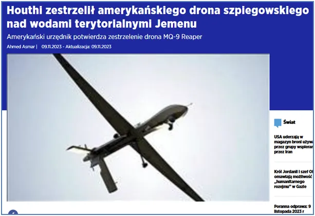
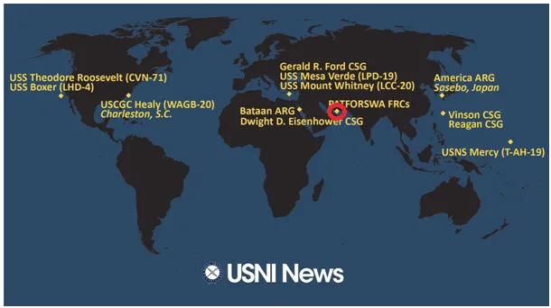
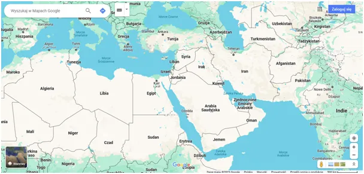
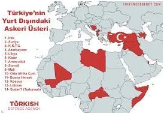
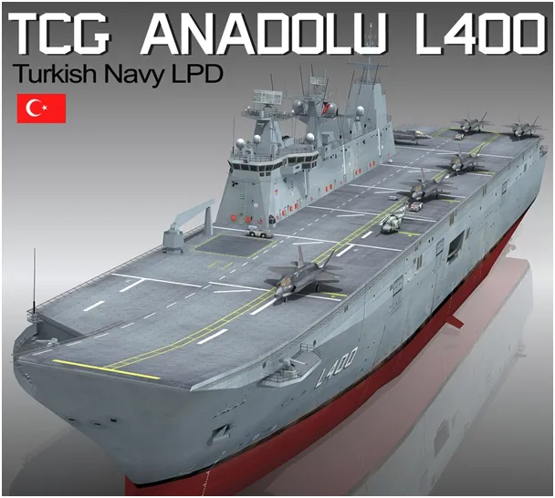
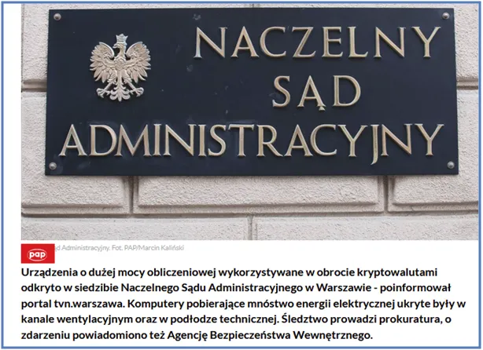

Czy Chińczycy z Dżibuti kręcą już lody w piwnicy Naczelnego Sądu Administracyjnego w Warszawie ?
Zaledwie skończyłem pisać o radykalnie spadającej wartości bojowej najbardziej zaawansowanych technologii mocarstw, a tu partyzanci z Jemenu zestrzelili amerykańskie cacko za 17 mln dolarów. Z Półwyspu Arabskiego ciągle napływają doniesienia, że z tego kluczowego regionu są skutecznie wystrzeliwane rakiety na Izrael w ramach pomocy militarnej Palestyńczykom.
Zatoka Perska to pułapka, Persowie byliby zachwyceni, gdyby wpłynął do niej amerykański lotniskowiec, ale on czujnie czeka przy wyjściu z zatoki na oceanie. Z tej zatoki pochodzi istotna część ropy dla Chin i Zachód szachował zawsze Chińczyków potencjalną blokadą tego szlaku. "Plandemia" i wojna na Ukrainie zmieniły kierunki przepływów ropy i gazu. Rosja wysyła co ma na wschód, do Indii i Chin oraz przez Turcje na Bałkany i trochę do Niemiec i Austrii. W tej sytuacji Chiny są gotowe na czasową przerwę w dostawach z Zatoki Perskiej. To przyczyna eskalacji konfliktu. Recesja na zachodzie obniża ceny ropy mimo wojny na bliskim wschodzie. Importerzy (Chiny) robią zapasy, eksporterzy (USA) notują straty. Dolar taniał przy spadkach cen złota co jest nietypowym zjawiskiem.

Równie skomplikowana jest geografia polityczna Morza Czerwonego, przez które prowadzi szlak z Europy przez Kanał Sueski do Azji. Małe Dżibuti przy wejściu na Morze Czerwone to chińska baza wojskowa. Ryzyko blokady szlaków jest wysokie dla obu stron, już nie tylko dla Chin. Turcja ma bazę w Katarze i wielu innych punktach w regionie, jest języczkiem uwagi, szczególnie że od roku posiada swój lotniskowiec. Jeśli nie stanie otwarcie po stronie Azji, to może np. stanąć w obronie "uciskanych muzułmanów" na greckiej części Cypru i rozwiązać w ciągu kilku godzin problem Cypryjski, "jednocząc wyspę pod swym demokratycznym przywództwem". Pakt NATO nic nie mówi jak rozwiązywać problemy między członkami paktu, a Grecja i Turcja są jego równoważnymi członkami.



Świat zmienia się błyskawicznie, ale mało o tym w naszych mediach. Na stronie Polskiej Agencji Prasowej dowiemy się za to że:
"Urządzenia o dużej mocy obliczeniowej wykorzystywane w obrocie kryptowalutami odkryto w siedzibie Naczelnego Sądu Administracyjnego w Warszawie - poinformował portal tvn warszawa. Komputery pobierające mnóstwo energii elektrycznej ukryte były w kanale wentylacyjnym oraz w podłodze technicznej. Śledztwo prowadzi prokuratura, o zdarzeniu powiadomiono też Agencję Bezpieczeństwa Wewnętrznego."

Czyli ktoś kręci gigantyczne lody, a my, społeczeństwo płacimy gigantyczne rachunki za prąd do tych serwerów. Mam dziwne przeczucie graniczące z pewnością, że takich krypto kopalń jest w Warszawie i w Polsce bardzo dużo. Szukałbym też w budynkach samorządów itp. Prawie cała Polska jest państwowa, i to dla złodziei jest raj.
Paweł Klimczewski